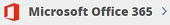

Upgrade von einem Testabonnement Bearbeiten Sie auf GitHub Dokumentänderungen anfordern
Mitwirkende
Wenn Sie ein Upgrade von einem Testabonnement auf ein lizenziertes Abonnement durchführen, bleiben Ihre Testdaten nur erhalten, wenn Sie denselben Backup-Speicherzieltyp und denselben Backup-Speicherbereich beibehalten.
| Wenn das Sicherungsziel Ihres Testabonnements ... ist | Und das Backup-Ziel Ihres lizenzierten Abonnements ist ... | Ihre Testdaten sind ... |
|---|---|---|
Amazon S3 wird von SaaS Backup bereitgestellt | Amazon S3 wird von SaaS Backup bereitgestellt | Konserviert |
Azure Blob wird von SaaS Backup bereitgestellt | Azure Blob wird von SaaS Backup bereitgestellt | Konserviert |
BYOS | Das gleiche BYOS-Ziel | Konserviert |
Amazon S3 wird von SaaS Backup bereitgestellt | BYOS | Nicht migriert |
Azure Blob wird von SaaS Backup bereitgestellt | BYOS | Nicht migriert |
BYOS | Ein anderes BYOS-Ziel | Nicht migriert |
BYOS | Amazon S3 wird von SaaS Backup bereitgestellt | Nicht migriert |
BYOS | Azure Blob wird von SaaS Backup bereitgestellt | Nicht migriert |
Wenn Sie den Typ Ihres Backup-Speicherziels ändern, gehen Ihre Testdaten verloren. Jede Änderung an Ihrem Sicherungszielgebiet führt auch zu Datenverlust.
Klicken aus dem linken Navigationsbereich.
Klicken Sie auf den Link Microsoft Office 365.

Klicken Sie unter Abonnementdetails auf .
Wählen Sie Ihre Upgrade-Option und klicken Sie dann auf Weiter .
Wenn Sie über AWS Marketplace einkaufen, wählen Sie AWS Marketplace . Andernfalls wählen Sie NetApp License .Wenn Sie die NetApp-Lizenz ausgewählt haben:
Geben Sie die Lizenzinformationen ein und klicken Sie dann auf Abonnement validieren .
Eine Bestätigung Ihrer Lizenzinformationen wird angezeigt.Klicken Sie auf Weiter .
Die Informationen zum Abonnementspeicher sowie das Speicherziel und die Region werden angezeigt.Wenn Sie den Zielspeichertyp oder die Zielspeicherregion ändern möchten, gehen Sie wie folgt vor:
Wählen Sie den neuen Zielspeichertyp und / oder die Region aus.
Hinweis : Wenn Sie das Ziel Ihres Speichers oder Ihre Zielregion ändern, werden die Testdaten von NetApp SaaS Backup für Office 365 nicht migriert. Sie müssen zustimmen, um fortzufahren.Wenn Sie den Zielspeichertyp ändern, geben Sie die erforderlichen Informationen ein und klicken Sie auf Verbindung testen .
Klicken Sie auf Weiter .
Überprüfen Sie Ihre Konfiguration und klicken Sie dann auf Speichern .
Wenn Sie den gleichen Zielspeichertyp und den gleichen Zielspeicherbereich beibehalten möchten, überprüfen Sie Ihre Konfiguration und klicken Sie auf Speichern .
Wenn Sie AWS Marketplace ausgewählt haben:
HINWEIS: Lizenzierte Abonnements über AWS marketplace können nur den von SaaS Backup bereitgestellten Amazon S3-Speicher verwenden. Wenn Sie eine BYOS-Speicheroption für Ihr Testabonnement verwendet haben, werden Ihre Testdaten nicht migriert.Klicken Sie auf den Link, um zum AWS Marketplace zu gelangen .
Folgen Sie den Anweisungen des Marktplatzes.
Melden Sie sich mit Ihrem Microsoft Office 365-Konto bei SaaS Backup für Office 365 an.
Klicken Sie auf das Symbol für die Microsoft Office 365-Einstellungen.

Klicken Sie unter Abonnementdetails auf .
Wenn Sie für Ihr Testabonnement eine BYOS-Option verwendet haben, wird eine Warnung angezeigt. SaaS Backup für Office 365 migriert die Testdaten nicht zum neuen Ziel. Sie müssen zustimmen, um fortzufahren.
HINWEIS: Wenn Sie in Ihrem lizenzierten Abonnement weniger Benutzer als in Ihrem Testabonnement angeben, werden alle Benutzerkonten in die ungeschützte Ebene verschoben, wenn das lizenzierte Abonnement aktiviert wird. Nach der Aktivierung müssen Sie die gewünschten Konten manuell in eine geschützte Ebene verschieben.Klicken Sie auf Speichern .